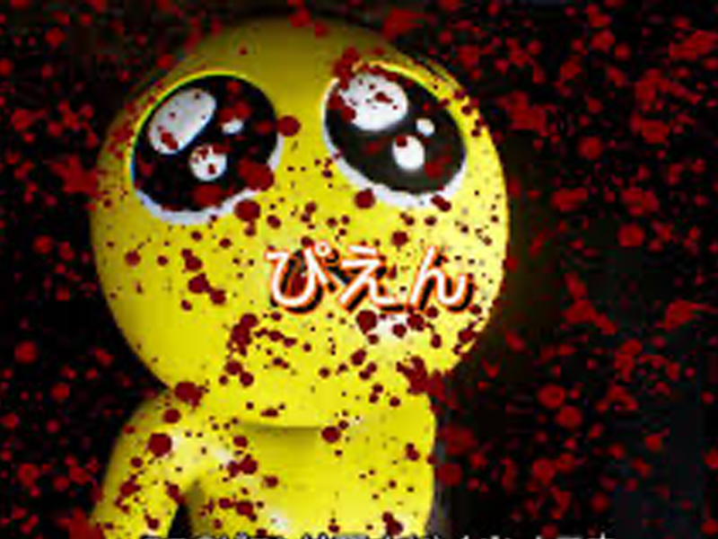
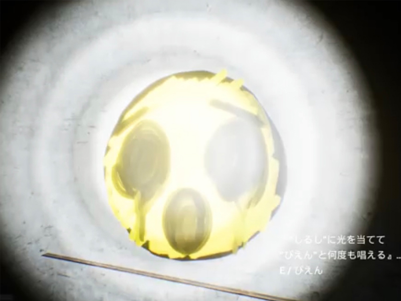
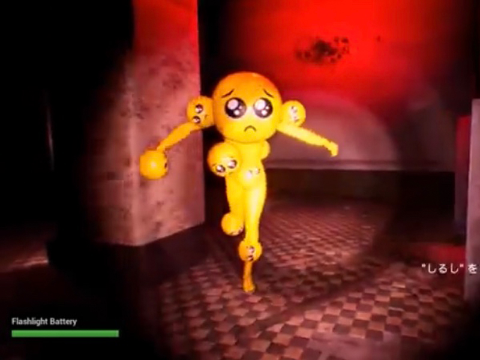

PIEN
- 配信日:
- 対応機種:PC
- 定価:無料
- ジャンル:ホラゲー
- タグ:#バカゲー#pcゲーム#無料ゲーム#ホラー

ぴえん、ぴえん、と唱えながら謎のキャラから
逃げるバカホラゲー！
バカゲー要素
- バカ要素① 携帯の顔文字がキャラとなり襲ってくる！
- バカ要素② ぴえんが謎のBGMと共に急に踊り出す！
- バカ要素③ 最後の方になるとキメラのような姿になる！
ゲーム概要
ゲーム内容は懐中電灯を頼りに不気味な薄暗い廃墟を探索していく。フィールド上にある
「ぴえん」の"しるし"が描かれているところに
懐中電灯の光を当て、全ての「ぴえん」と何度も唱えることで"しるし"を消していくというもの。
廃墟を探索していると、突然人形の「ぴえん」がプレイヤーの方向に走ってくる。ぴえんに接触すると、血しぶき・絶叫とともに
「ぴえん」という文字が表示され、ゲームオーバーとなる。
ギャグ要素の強い内容ではあるが、突然ぴえんがこちらを向いて追いかけてくるなど、
びっくりする要素も多い。また「ぴえん」の演出そのものが狂気的なため、
雰囲気なども相まって普通に怖いと感じる人もいる。
バカゲー要素ここらかはネタバレ注意
5分でわかるプレイ動画はこちら
ゲームがほぼわかるプレイ動画はこちら
プレイ感想
ぴえんはインターネット上にある顔文字をそのまま3Dキャラクターにしたとこともあって
とても話題になりましたね。そこでプレイしてみたのですがまず登場人物がぴえんとプレイヤーしかいないので孤独感が半端ない。
しかもぴえんと会う時は唐突に会うことがあるので怖いと感じることもあるが、親近感は沸かないし、ホラゲーなのに怖くないという本末転倒なことが起きている。
しかし第二ステージになるとぴえんの姿が変わって顔がいくつもついているので普通にキメラみたいで普通に怖い、
しかも追いかけてくる時にかかるbgmがぴえんのテーマではなく、別のホラー感のあるBGMに変わるので捕まるんじゃないかと思う慌てる気持ちが掻き出される。
また所々に出てくる演出がなんとも言えないエモさがある。例えば1ステージ目が終わった後にぴえんの顔が大きく出てくる演出が
あるのだがなぜそういう演出を考えるのかと不思議で仕方で仕方ない。
おそらく作者はこういうエモさを求めてゲームを作ったんだなと思うと単純で面白いわかりやすゲームだなと思いました。
後無料で容量が軽いのでいろんな人が楽しめるのでぜひやってみて欲しいです。(もうyoutubeでいろんな人がやっているけど…)